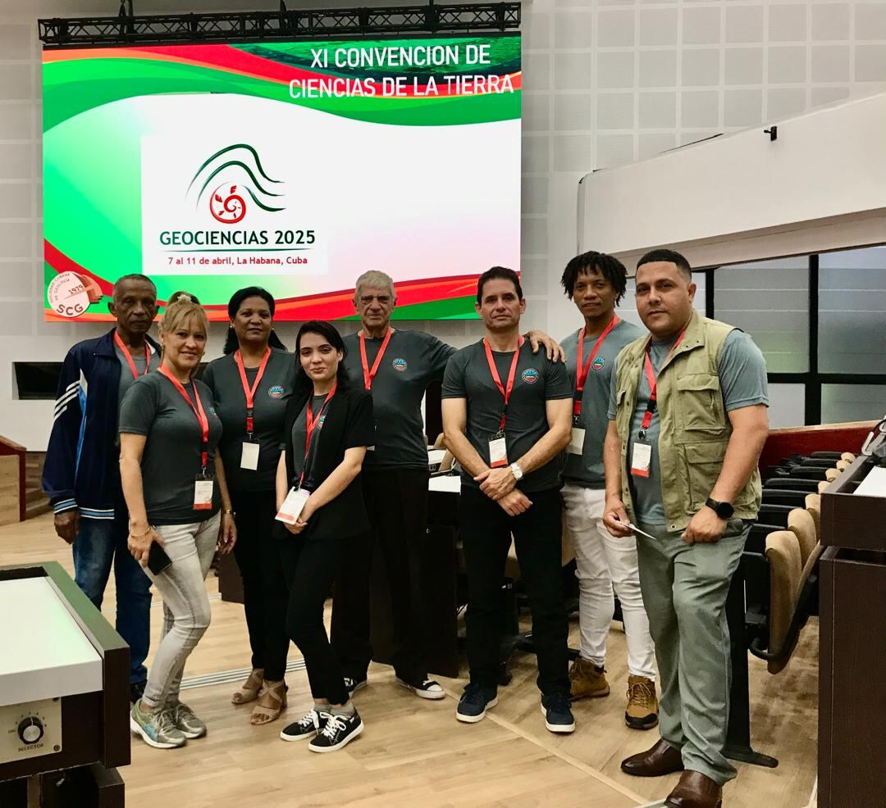
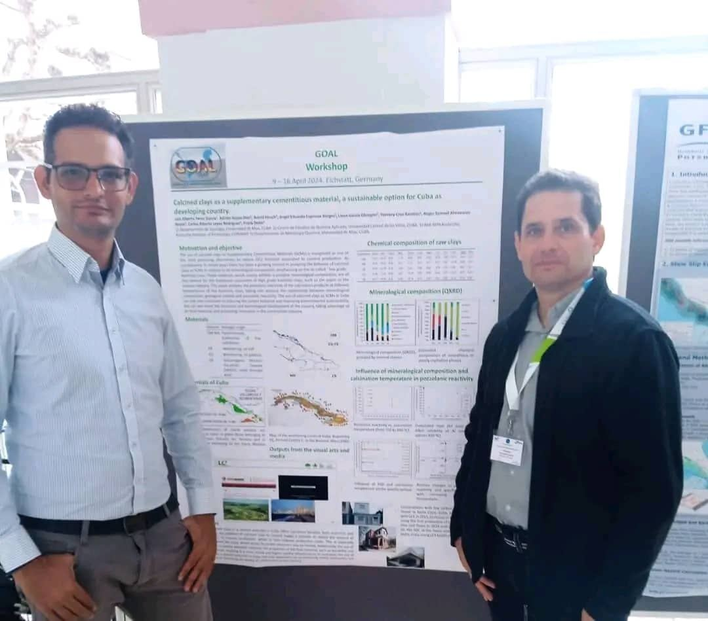
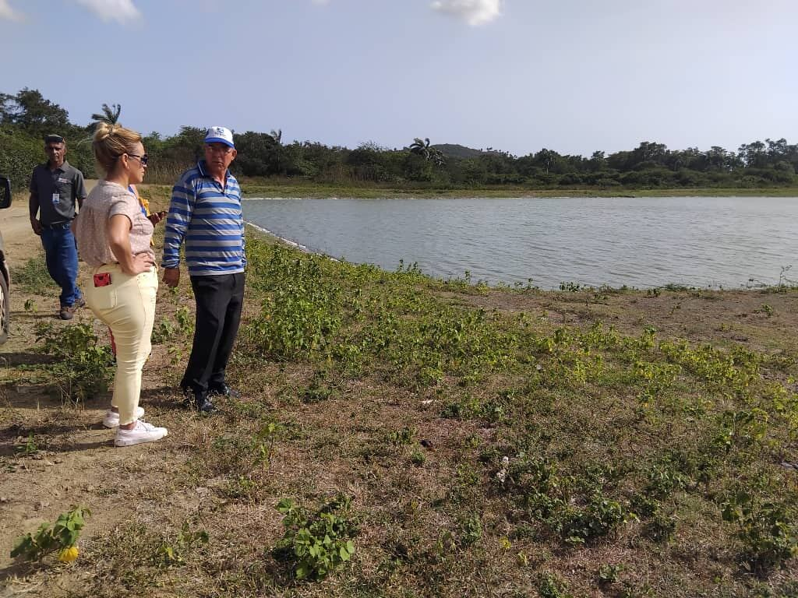
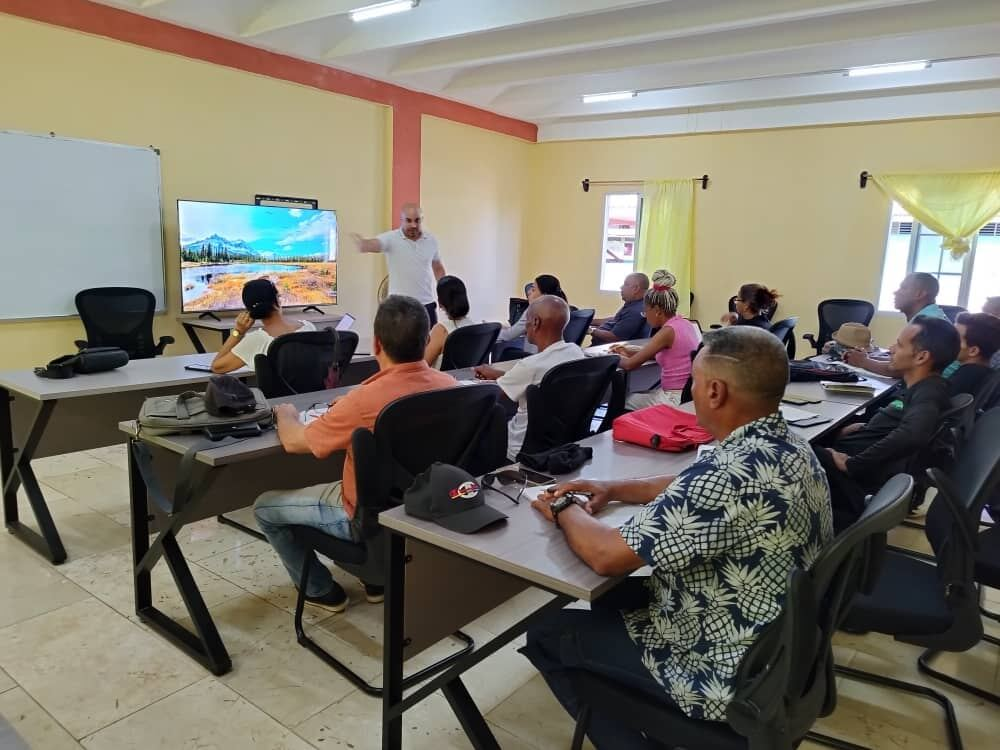
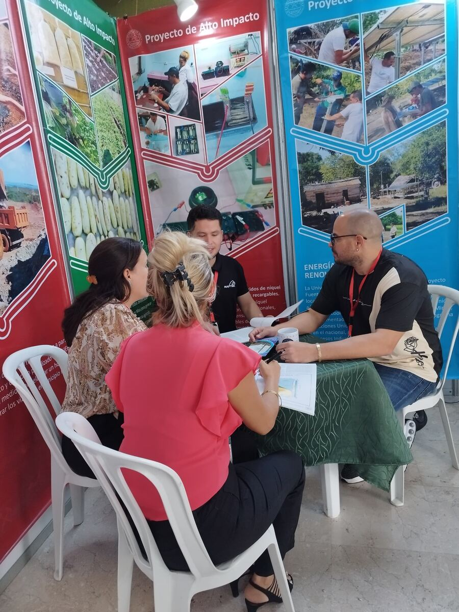
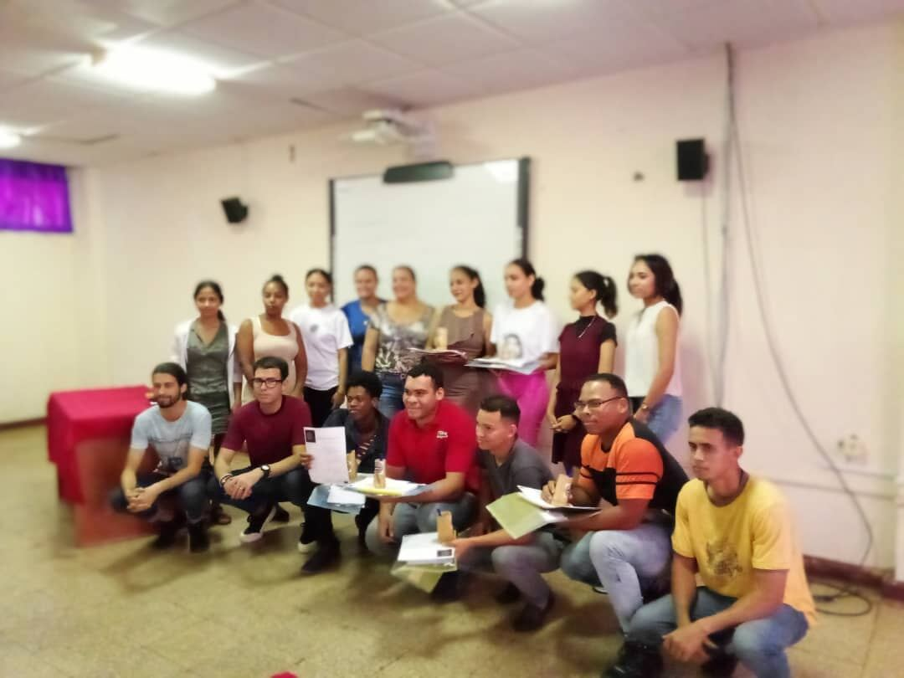

Galería
Momentos del trabajo con la comunidad, las instituciones y la comunidad científica.

Convención GEOCIENCIAS 2019. 
Presentación de póster en un evento científico. 
Recorrido de campo en el territorio. 
Capacitación en aula. 
Stand de exposición y consultas. 
Taller con participantes de la comunidad.